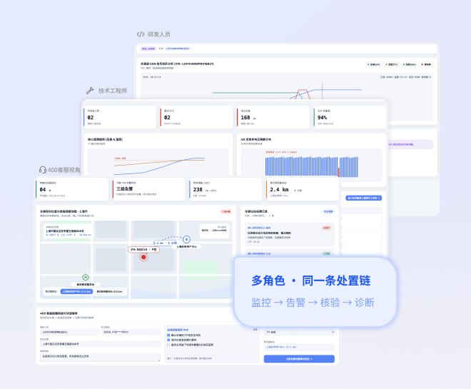
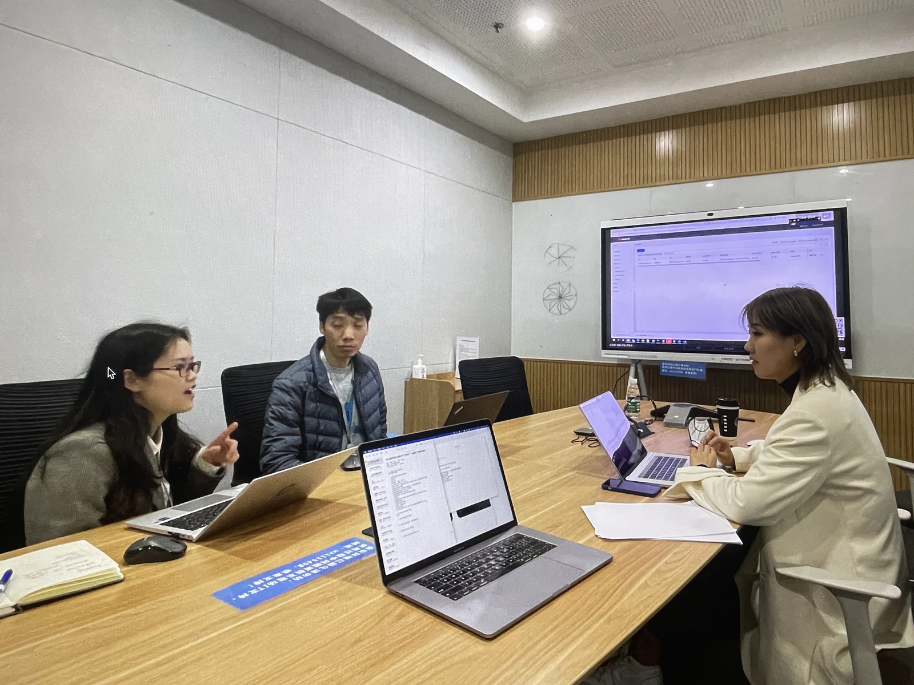
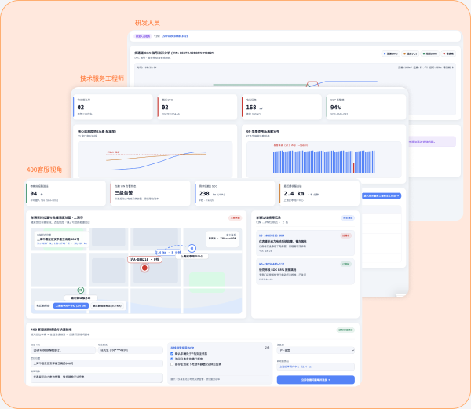
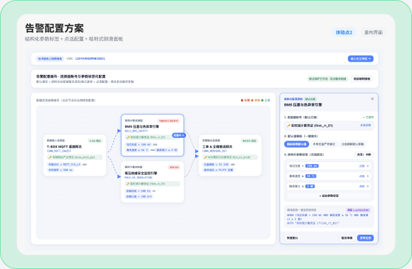
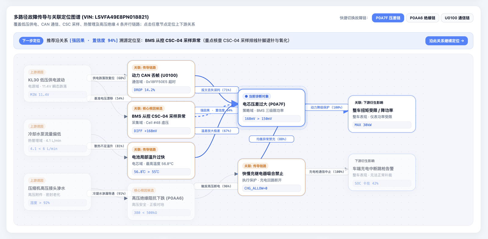
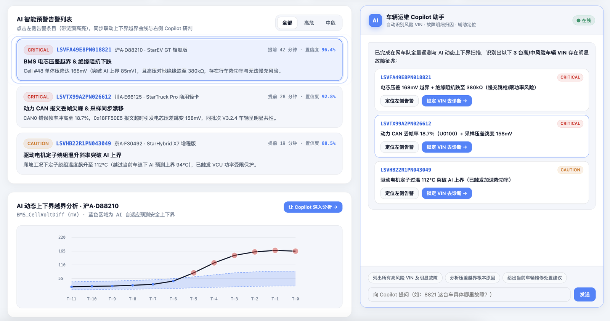
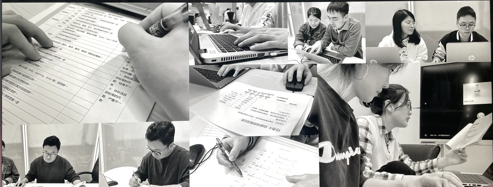

一个角色，承接所有运维任务。
以“车辆运维”为统一用户，尚未区分不同岗位的处理职责与信息需求。
0 → 1 / ENTERPRISE UX
面向车企的车辆健康数据运维平台。
我通过现场调研，提出三类协作角色，
将岗位任务转化为监控、配置与诊断方案。

展示说明方案界面图为重绘示意，仅用于说明设计思路与交互逻辑。
本案例聚焦：角色与任务重构、关键操作设计及上线后的可用性验证。
缺少可直接借鉴的成熟方案，初版以“车辆运维”为统一用户。我通过实地调研发现，报障核验、专业诊断与深度分析，需要不同岗位按需协作。

以“车辆运维”为统一用户，尚未区分不同岗位的处理职责与信息需求。
客服接收与核验，技术服务开展诊断，研发深入分析。不同处理深度，需要不同信息与交接依据。
我的关键判断将统一的“车辆运维”用户细化为三类协作角色，再按各自任务组织信息与操作。
400 客服先核验问题，技术服务工程师开展专业诊断，研发人员深入分析。角色划分用于明确各岗位需要什么信息、完成什么任务。
按问题需要交接，不要求每个问题经过全部岗位。
角色模型明确职责分工，具体任务进一步决定信息呈现与操作方式。
客服核验车辆状态，研发分析信号与趋势；监控信息应随岗位任务区分重点。
方案承接 · A 实时监控配置告警时仍需参照分析对象，将参数面板留在画布旁，保持操作上下文。
方案承接 · B 告警配置人员交接明确处理职责；故障关系视图呈现对象关联，帮助诊断时定位与查看。
方案承接 · C 故障定位核心方案聚焦监控、配置与故障定位；AI 预警作为项目期间的规划探索补充呈现。
问题：客服核验车辆状态，研发分析信号趋势，
统一的指标视图难以兼顾不同任务。
改变 → 从默认数据，转向任务所需信息。

问题：参数格式和输入规则复杂，
离开画布配置容易打断任务。
改变 → 配置步骤与分析对象保持在同一处。

问题：故障对象与关联方向不清晰，难以判断从哪里继续排查。
设计重点：明确当前对象、关联路径与故障信息。

选中反馈突出当前对象，
明确操作焦点。
呈现关联方向与路径，
为继续排查提供线索。
沿路径定位故障点，
在同一上下文查看详情。
交互补充：方案以涟漪反馈强调选中对象，以流动效果辅助识别关联方向；此处为静态展示。
2021—2023 年项目期间规划：将指标看板、AI 上下界分析与预警解读放在同一页，支持异常识别与后续排查。此处展示规划方案，不代表已上线能力。

设计目标 → 在同一页查看指标、理解预警，并衔接故障排查。
作为交互负责人和业务接口人，我用角色模型、任务路径与方案取舍支持产品线评审，并协调排期与设计资源，推进交付。
需求集中进入，设计人力紧张；一旦延误，
开发、测试与上线节奏会被连带影响。
与产品线提前开展需求评审并同步设计团队，
错峰启动设计评审，为后续开发与测试预留时间。
节奏示意用于说明协作方式，不代表工时测量或提效百分比。
协调非全时投入的设计资源，同步评估工作量、排期风险与交付质量。
1.0 上线后，我主导可用性测试，负责测试准备、用户访谈与问题梳理，并推进迭代方案设计和评审。
定义关键路径、测试指标与参与用户，建立体验评估基线。
开展用户访谈与任务观察，记录问题出现的场景及用户反馈。
整理问题、定义改进需求，设计迭代方案并汇报评审。

评估维度：一致性、易用性、满意度、任务效率与性能。
围绕核心方案，可从以下任务检查改动；这些是复测思路，不是已完成的结果。
展示边界：本节呈现已开展的测试与迭代工作，不以复测设想推断优化成效。
我的价值从现场研究校准角色定义，把岗位任务转成交互方案，再通过可用性测试推动迭代。